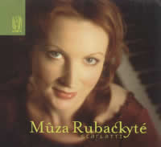

|

CLASSICA
- June 2002
Mûza Rubackyté interprète ce beau programme
Scarlatti de manière variée et convaincante. Il est de
coutume de jouer Scarlatti de manière très fine, à
la française, avec une technique de doigts. Le plus souvent, la
musique reste donc dans un mouchoir de poche. La pianiste lithuanienne
ne déroge pas à la règle, et offre un piano
magnifique: le toucher est léger, égal, souvent
perlé; le jeu est transparent, varié mais direct, et
évite tous les stéréotypes et systèmes. En
outre, quoique discrètement, la main gauche passionne,
tantôt fondue dans la droite, tantôt plus autonome,
présente sans être écrasante, y compris lorsque les
basses reposent sur toutes leurs rondeurs. Son jeu n'est pas
irréprochable: la pianiste se montre parfois un peu trop
nerveuse dans certaines pièces, abordées avec un rien de
précipitation, voire un peu gênée par les
redoutables ornements qui fleurissent la musique (K6 par exemple). On
regrette parfois que les plans sonores ne soient pas davantage
différenciés, écartés, que le soleil nous
soit trop caché par l'ombrelle de la pédale, ou, au
contraire, que l'articulation soit un rien trop sèche. Mais on
ne s'ennuie jamais. Plus que sur la variété dynamique,
Mûza Rubackyté rend la musique entraînante par une
énergie rythmique qui la fait pétiller, crépiter,
ainsi que par une science habile de la liberté rythmique. Les
pièces lentes ou mélancoliques sont jouées avec
une totale simplicité. Et la musique demeure le plus souvent
habitée de cette grâce, mélancolique ou joyeuse,
qui irradie les Sonates de Scarlatti. S'il ne nous fait pas oublier
Zacharias (EMI), voici assurément un beau disque.
Stéphan Vincent-Lancrin